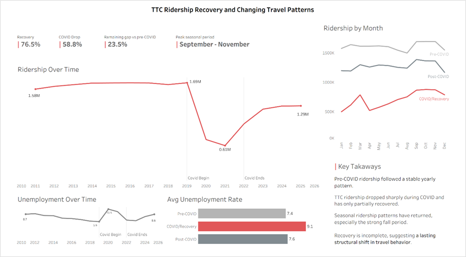
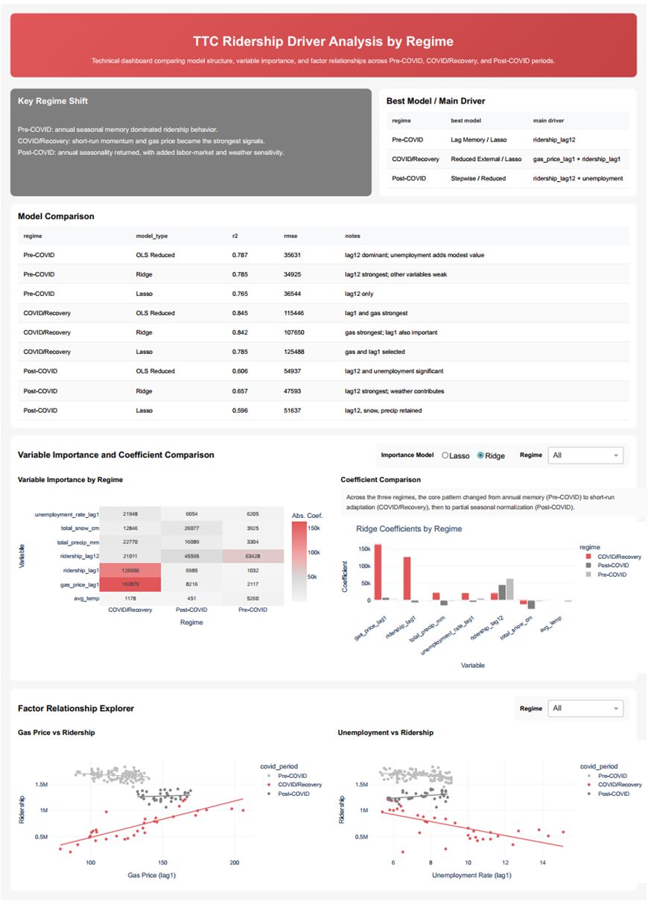

This project asks a practical planning question: after COVID disrupted commuting, school trips, leisure movement, and office routines, could TTC ridership still be understood using the same historical patterns? The answer was no. The analysis shows a system that moved through three different regimes: stable seasonal demand, reactive disruption, and partial post-COVID normalization.
Before 2020, transit ridership could be treated as a mostly stable seasonal system. January, September, and November had recognizable demand patterns; previous-year ridership was a strong guide to the present. COVID broke that rhythm. The goal of this project was to identify whether TTC ridership had returned to its old structure, or whether Toronto's travel behavior had entered a new regime.
The analysis was designed around four questions that matter for transit planning and public-facing communication:
Instead of forcing one model across the full timeline, the project uses a regime-based structure. That choice is the core of the story: ridership is treated as a system whose relationships can change after a shock.
The project combined TTC ridership with economic and weather context. Because the final question was about medium-term structural change, all sources were standardized to a monthly level. The result was not just a charting table, but a modeling-ready dataset with lag features, regime labels, and quality checks.
| Source | Role in the analysis | Frequency / transformation |
|---|---|---|
| TTC average weekday ridership | Main outcome variable measuring transit demand | Monthly |
| Regular gasoline prices | Travel-cost context and possible substitute-pressure signal | Monthly, with lagged value |
| Unemployment rate | Labor-market context connected to commuting demand | Monthly, with lagged value |
| Environment and Climate Change Canada climate data | Weather context: temperature, precipitation, snowfall | Daily files appended and aggregated monthly |
| Derived calendar fields | Month, season, COVID regime, and month dummies | Engineered from date fields |
Ridership data was reshaped from wide yearly/monthly format into a long monthly series. Dates were standardized so every source could share the same time key.
The pipeline checked duplicates, selected relevant fields, aligned monthly records, and handled missingness carefully. Broad climate imputation was avoided to prevent misleading precipitation or snowfall interpretation.
The final table added ridership_lag1, ridership_lag12, gas_price_lag1, unemployment_rate_lag1, COVID regime labels, and month dummy variables for statistical modeling.
The visual story starts with a drop, but the real story is what happened after the drop. Average ridership recovered from the COVID/recovery period, but the post-COVID level remained below the pre-COVID baseline. The project therefore compares both volume recovery and driver recovery.
Multiple linear regression was used because monthly ridership is continuous and the goal was to compare explanatory structure. For each regime, the project tested several model families so the analysis could separate calendar seasonality, ridership memory, and external variables.
Tests how much ridership can be explained by calendar structure alone. This worked well in stable periods, but poorly during COVID/recovery.
Uses ridership_lag1 and ridership_lag12 to test whether demand follows recent momentum or same-month prior-year behavior.
Adds gas price and unemployment context to test whether external conditions explain additional variation beyond ridership history.
Used as a compact screening tool, not the only evidence. It helped summarize which predictors survived within each regime.
Used to reduce coefficient instability when predictors overlapped, especially in the smaller COVID/recovery and post-COVID samples.
Used to identify which variables remained after weak effects were shrunk to zero, giving another view of driver importance.
The strongest result is not one coefficient or one dashboard number. It is the shift in structure. TTC ridership changed from a stable seasonal system, to a short-run reactive system, and then to a partially normalized system with some new sensitivities.
The month-only model already explained 66.6% of variation, and the lag memory model improved to R² = 0.7717. The dominant variable was ridership_lag12, meaning same-month prior-year demand mattered far more than recent month-to-month movement.
Seasonality broke down: the month-only model fell to R² = 0.2274. The reduced external model rose to R² = 0.8448, with ridership_lag1 and gas_price_lag1 becoming central. Ridership was no longer following its old annual rhythm.
Seasonality returned but did not fully restore the old structure. The month-only model reached R² = 0.7007, and ridership_lag12 became significant again. Unemployment and weather also showed more influence than in the pre-COVID baseline.
TTC recovery should not be interpreted only as “how much ridership came back.” The more important question is “what kind of demand came back?” The project shows that post-COVID ridership recovered in volume, but the system did not simply return to its old pre-COVID logic. Annual seasonal structure partially returned, while labor-market and weather sensitivity became more visible.
The final project was communicated through two dashboard styles. The general dashboard focused on the business story: decline, recovery, seasonality, and headline metrics. The technical dashboard focused on model comparison, coefficient patterns, and regime-specific driver importance.
Designed for fast interpretation: recovery rate, ridership trend, month patterns, unemployment context, and concise takeaways. The goal was to make the structural change understandable without requiring the viewer to read regression tables.
Designed for analytical review: best model by regime, heatmaps of variable importance, coefficient comparisons, and scatterplot relationships. This view supports deeper questions about why the models changed.
This view presents the project as a clear business story: the pre-COVID baseline, the COVID collapse, the partial recovery, the remaining gap, and the return of seasonal travel patterns.

This view supports the analytical argument with model comparison, best-driver summaries, coefficient patterns, heatmaps, and factor relationship plots by regime.

This is an explanatory and comparative project, not a causal proof. The monthly level is strong for strategic pattern analysis, but not for route-level operations or daily forecasting. The COVID/recovery and post-COVID samples are smaller, so those estimates should be read as directional evidence rather than permanent structural laws.
Add office occupancy or remote-work intensity to better separate commuting demand from general mobility recovery.
Extend the sample as more months become available so post-COVID model estimates become more stable.
Compare explanatory models with ARIMAX or other time-series approaches for formal out-of-sample forecasting.